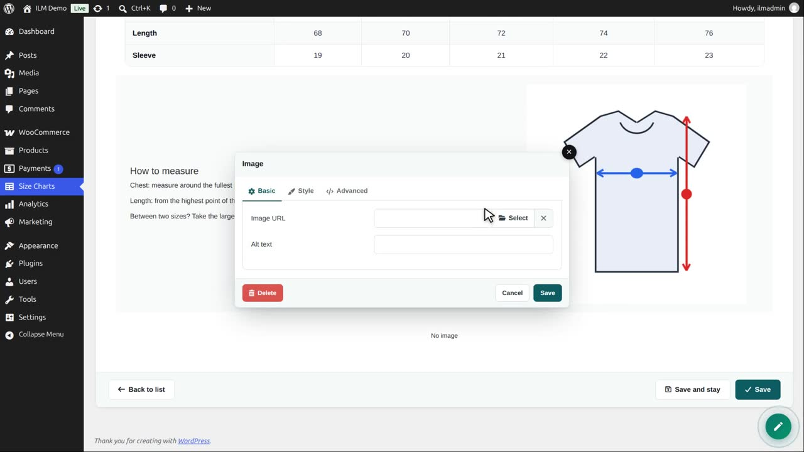
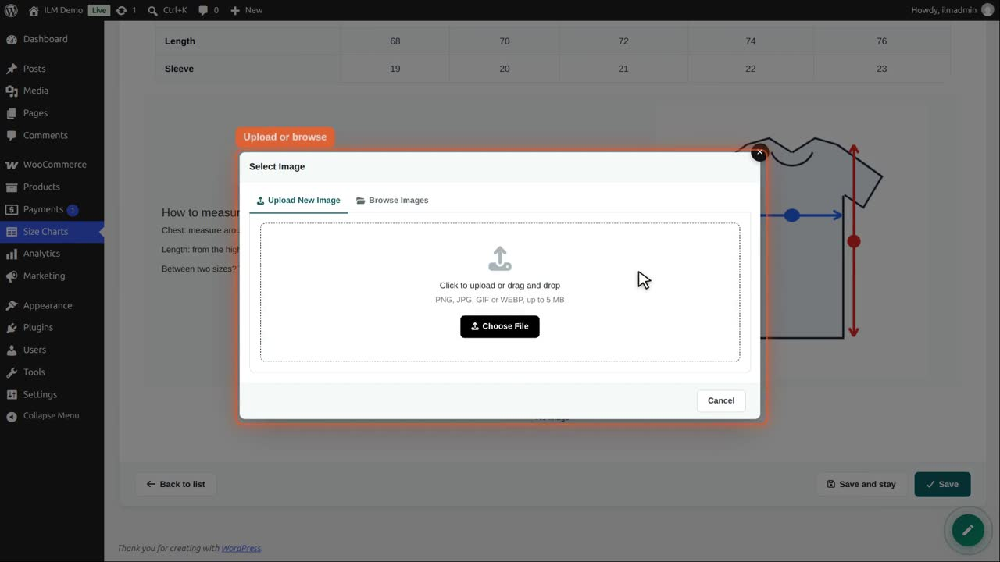
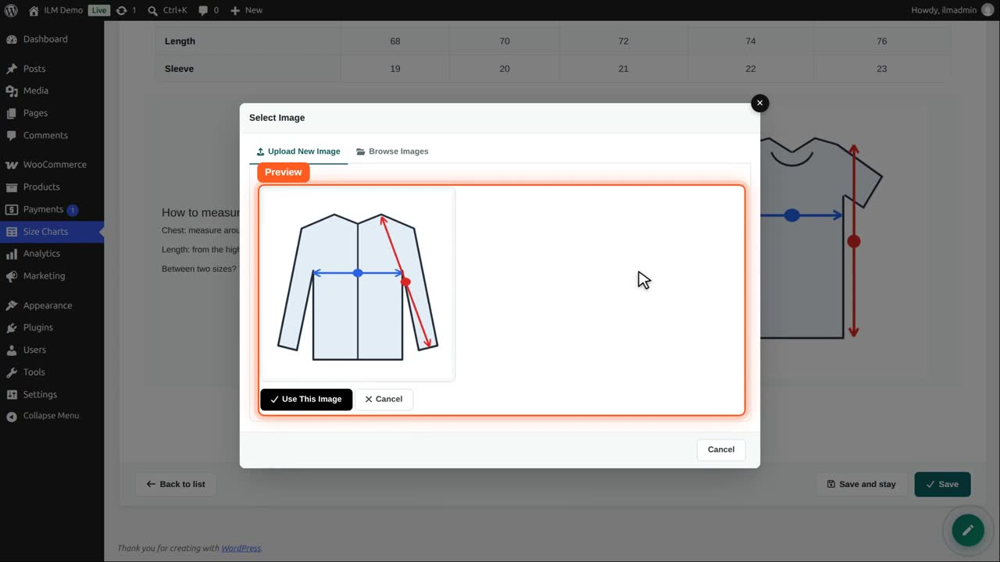
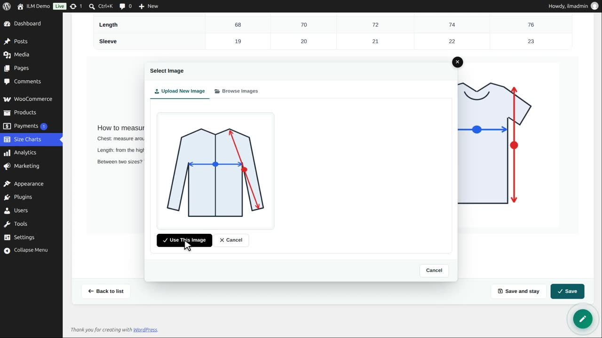
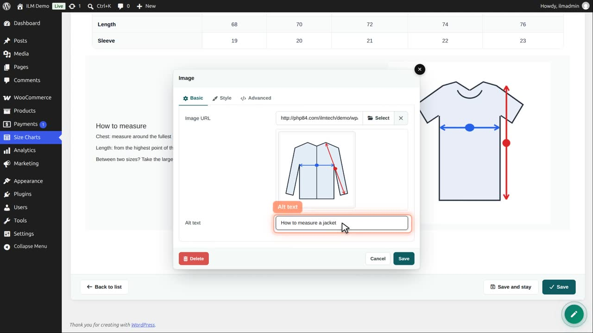
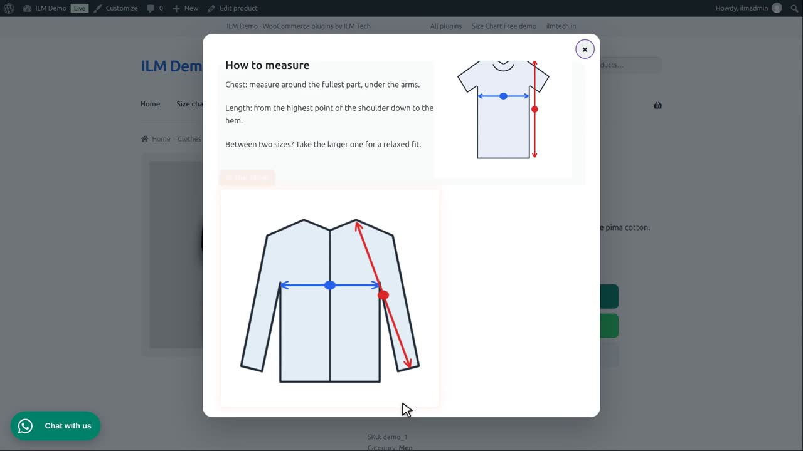

| Component | Use it for |
|---|---|
| Image | A picture, such as a measuring guide. Upload it or pick one from the image library. |
Edit the chart, open the designer, add a row and choose Image.

Click Select. Upload a new picture, or browse the pictures you uploaded before.

We choose a measuring guide from the computer. It is shown before it is uploaded.

Click Upload. The picture is stored in your shop and filled in. Next time it is in the Browse Images tab.

Alt text describes the picture for search engines and for shoppers who use a screen reader.

Save the editor and the chart. The picture is in the size chart in the shop. On the Style tab you can set its size, border and rounded corners.

PNG, JPG, GIF and WebP pictures up to 5 megabytes can be uploaded.